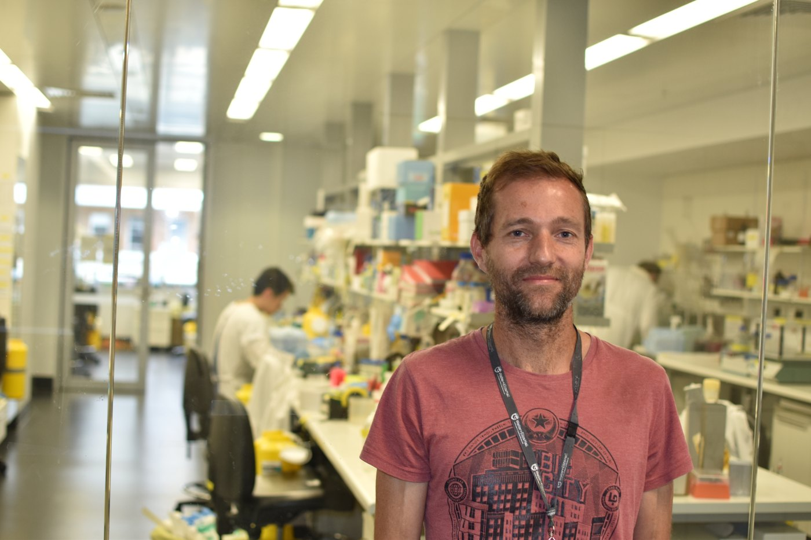

The work
Vince’s laboratory investigated cell death and inflammation. Masters’s work included inherited autoinflammatory conditions, using information from patients to explore disease pathways. Their research involved exchanges among basic science, clinical collaborators, and technology specialists.
The perspective
Both reflected on the shift from performing experiments to enabling a group’s research. Funding, communication, and supporting other scientists had become major parts of the day. Their joint interview offers a view of the organizational work behind laboratory discoveries.
